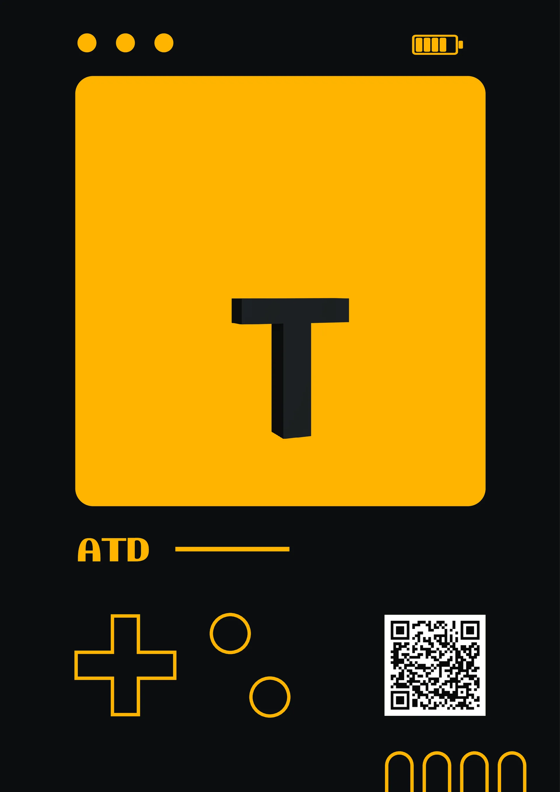

AR · T Letter
Questa scheda presenta una tavola del progetto AR. L’immagine documenta il lavoro; non avvia un’esperienza di realtà aumentata.

- Linguaggio
- AR
Questa scheda presenta una tavola del progetto AR. L’immagine documenta il lavoro; non avvia un’esperienza di realtà aumentata.
